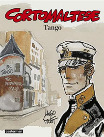

Tango est le dixième album de la série Corto Maltese. Il fut édité en album en 1987, mais parut en feuilleton en 1985. Il est composé d'une unique histoire de 64 pages.
Tango se déroule à Buenos Aires, en Argentine, en 1923. Corto s'y rend pour venir en aide à Louise Brookszowyc, une amie rencontrée à Venise deux ans auparavant, lors de l'album Fables de Venise. Il évolue dans les milieux troubles de la pègre d'Argentine et de la Varsovia, organisation de crime organisé impliquée dans le trafic d'êtres humains, et rencontre le célèbre Robert LeRoy Parker, alias Butch Cassidy, que tout le monde croyait disparu quinze ans...
